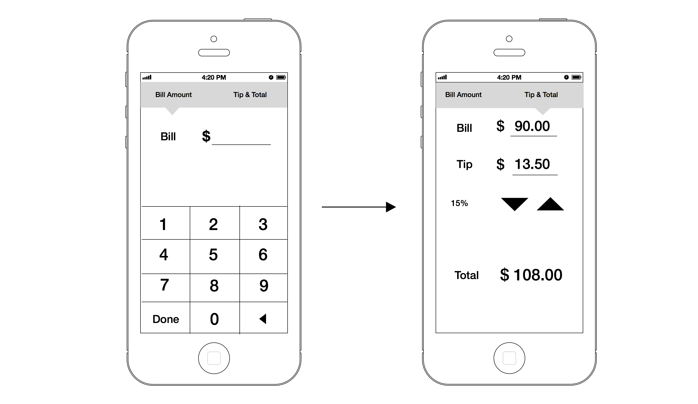

Tip Calculator
Problem
I just ate a meal and I need to know how much to tip the waitress.
Solution
Create a tip calculator that is quick and easy to use.
How does one calculate a tip?
First I sketched what the steps are on how to calculate a tip. This helped me break down the problem and see what components were most important. Since this is a mobile application and every inch of screen space is valuable. I knew I needed to keep the features to a minimum.

User Research
-Who is my user?
-What information will help them achieve their goals? What features will enhance their experience?
-What scenario will they be in when they use this application? Are they on the go, or just leisurely hanging around? Will they use this on a laptop or mobile device?
-How will I measure success?
Wireframes
Mood Board
Since this was a simple application I knew I could really focus on the design elements. I took inspiration from the pictures below. I love how these applications use color and layout to visually enhance the user experience and communicate effectively.
Final Mockups
Whenever I am designing for a product I think about the content first and how I can improve the communication of those elements through size, hierarchy, placement, texture, typography, color, etc. With this design I wanted a sophistication and elegance, like you might find at a restaurant, paired with idea of shape and line to draw your eye to the total.
I also took the iOS Human Interface Standards into consideration. These standards made me think about hit targets, negative space, clarity, deference, etc.